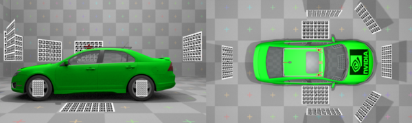
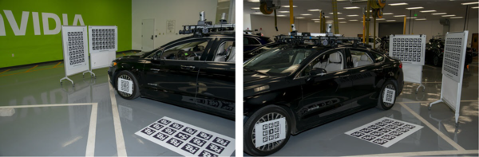

Table of Contents
The NVIDIA® Static Camera Calibration tutorial describes how to perform intrinsic and extrinsic calibration for a vehicle's cameras using the Camera Calibration Tools.
This step-by-step tutorial covers the following aspects:
- 1 Prerequisites : The materials required to perform calibration.
- 2 Scene Setup : The proper camera and target placements.
- 3 Capturing Data : Capturing the intrinsic and extrinsic data required by the tools.
- 4 Using the Calibration Tools : Generating camera calibration output.
- 5 Additional Information : Additional Information including intrinsic-only calibration.
1 Prerequisites
The following cameras and targets are required before proceeding in this tutorial.
1.1 Cameras
The following cameras are required for calibration:
1.1.1 AV Cameras
These comprise the set of cameras to be calibrated, referred to as "camera" or "cameras" in this tutorial:
Requirements:
- Fixed focal length cameras. In this tutorial, 12 AR0231 cameras are used as an example.
- Cameras are expected to be rigidly mounted on the vehicle and should not be moved relative to the vehicle after completion of this tutorial.
- Note
- Intrinsic calibration can also be performed before mounting of the cameras, if there is no additional distortion after mounting (e.g. caused by camera housing glass or windshield).
1.1.2 External Camera
An external photo camera is required to support the calibration of the AV Cameras, referred to as "external camera" in this tutorial:
Requirements:
- Fixed focal length of roughly 18mm-30mm.
- At least 12MP resolution.
- Sensor size to be roughly Canon's ASP-C or Nikon's DX size (roughly 23mmx15mm).
1.2 Targets
This tutorial requires the use of targets to calibrate the vehicle's cameras.
1.2.1 AprilTag Targets
The AprilTag targets used in this tutorial can be found in the following folder:
data/tools/calibration/aprilTargets
At 100% scaling factor, these target files (incl. boundary!) are of size DIN A4, but they are in vector format and can be scaled in a lossless fashion to A3, A2, A1, or A0.
An example of an AprilTag target used in this tutorial:
The targets must be printed as follows:
12+ Large AprilTag Targets
- Printed to A0 format (set print scaling to 400%)
- Use the targets with IDs 80-119 in
data/tools/calibration/aprilTargets - All printed boards must have different IDs.
4 Small AprilTag Targets
- Printed to A3 format (set print scaling to sqrt(2), i.e. ca. 141.421%).
- For standardization purposes, preferably use targets IDs 180-183 in
data/tools/calibration/aprilTargets.
- Note
- An AprilTag target with the same ID cannot be reused multiple times.
- Do not use targets printed from a different database than the one specified above.
1.2.2 Checkerboard Target
Additionally, a checkerboard target is needed for intrinsics calibration. Two checkerboard target versions can be found under data/tools/calibration/checkerboardTargets, one for A0 and one for ANSI E paper format:
- checkerboard_12x9_3inches_ANSI_E.pdf
- checkerboard_14x9_74mm_A0.pdf
Any checkerboard pattern with the following properties is supported:
- It is asymmetric, meaning there is an even number of squares in one direction and an uneven number in the other direction.
- It fills the paper format well, that is there is a roughly evenly sized white border around the pattern.
- The white border around the pattern is one square size large or larger.
- The squares are sufficiently large to be well distinguished by any camera captures.
- There are many squares to produce a large amount of constraint points at the square corners.
1.2.3 Target Print Validation
For each AprilTag target, the length of the horizontal bar in millimeters (mm) must be measured and noted down in the specified location in the top left corner, as demonstrated in the above image.
- Note
- Ensure the printouts have correct aspect ratios by comparing the length of the vertical and horizontal bars.
- For checkerboard targets, measure the horizontal and vertical sizes of multiple squares. All measurements must be absolutely identical (sub-millimeter accuracy).
- If their lengths are not equal, the targets MUST be reprinted, as they do not have the correct aspect ratio.
- All targets must be perfectly flat, rigid, and must not bend.
- The target surface should have a matte surface to avoid glare and reflections.
2 Scene Setup
2.1 Camera Placement
Depending on the number and location of the cameras on the vehicle, different scene setups may be used.
In this tutorial, a setup with 12 cameras mounted on a car roof is used as an example.
2.2 Target Placement
The following constraints and best-practices should be respected when placing targets during scene setup. Most of these constraints can be verified online with the Static Calibration Recorder Tool tool in extrinsics mode:
- The 4 small AprilTag targets are placed on the wheels. The AprilTag target centers and wheel centers must be aligned. These AprilTag targets define the origin (center of rear axle on the floor) and orientation (x-y-z corresponds to forward-left-up relative to the car) of the results' coordinate system. These targets must be listed in the special-targets.json. It is advisable to use a mechanical bracket to ensure precise mounting:

- Each camera should observe two or more large targets. The targets observed by a single camera should be angled with respect to each other, and viewed at different depths. Targets need to be fully observed by the camera sensors, partial coverage into the individual camera views is not sufficient.
- All targets should be as close as possible to the cameras while still being in focus depending on the camera properties. For instances, tele-camera lenses usually have a focus region >
6mand targets need to be placed with this minimal distance, while the focus region of other camera types usuall allows or demands targets to be placed closer to the sensor. - A target should cover a large area of the image (more than a quarter, the more the better). This is particularly important for narrow field of view cameras, like e.g. a 30 degree tele camera.
- Both observerability and focus proprties should be verified online with the Static Calibration Recorder Tool tool in
extrinsicsmode, which has to visualize stable detections of all observed targets. - If it is not possible for the target to be both in focus and cover a large part of the image, use a bigger target, or add more AprilTag targets to the view.
- Each AprilTag target in the scene must be unique, i.e. all targets must have different IDs.
- Place some AprilTag targets on the floor next to the car. Those targets define the ground plane. All ground targets must be listed in the special-targets.json.

- Place some targets on the floor in front of fisheye cameras, in order to both define the ground plane and constrain the fisheye cameras.

- Ensure that the floor is flat and level, such that all ground targets lie on a single plane.
Here is an illustration of how to place the AprilTag targets around a car with given sensor set:
Note that two targets are used for both front/rear tele cameras at different depth and further away compared to the other targets for non-tele cameras to fullfill the target plamement requirements.
In this tutorial, a set of 8 large and 4 small AprilTag targets are used as an example.


3 Capturing Data
The following types of data must be captured for static camera calibration:
- Intrinsic Data: This only needs to be captured once if camera parameters i.e., lens, have not changed.
- Extrinsic Data: Includes images captured from the vehicle's cameras to be calibrated and images captured with the external camera.
3.1 Capturing Data for Intrinsic Camera Calibration
In order to capture data for intrinsic camera calibration, a checkerboard target has be be moved in front of each camera to be calibrated.

Perform the following for one camera at a time:
- Move the checkerboard target from one side of the camera's field of view to the other, both horizontally and vertically.
- The accumulated checkerboard poses should fill the entire camera's field of view uniformly. The density of checkerboard detections should be roughly the same in all areas of the field of view.
- There should be at least 30 calibration images per camera, the more the better.
- At every position, tilt the checkerboard target both horizontally and vertically up to 45 degrees, and ensure that detections are being processed.
- Do this at various distances from the camera. Distances should range from where that the target covers about half of the image, down to 1/8th, but no further than that.
- Mount the target on a tripod to keep it steady at each pose. This allows precise constraint detection from motion-blur free images.
- Ensure that the camera lens is clean and there are no cables or other items blocking the view of the checkerboard target.
- Ensure that there is at most one calibration target present in view.
- Note
- It is often the case that part of a car-mounted camera's field of view is covered by part of the car, in particular for fisheye or wide angle lenses. Therefore it is advisable to perform intrinsics calibration before mounting the camera, otherwise it is difficult or impossible to get the uniform constraint-coverage of the field of view. However, it is also necessary to include all influences to the camera's intrinsics, such as distortion caused by camera-housings or the windshield.
3.1.1 Recording Options
There are different options to capture the data for intrinsic camera calibration:
- Take still images of the checkerboard target in the various calibration poses.
- Take a video recording of the checkerboard target in the various calibration poses.
- Real-Time extraction of intrinsics constraints using the Static Calibration Recorder Tool tool.
Still images can be captured using Camera Sample. Also see 3.2.1 Extrinsics Images, where it is also necessary to get still images from video or camera.
For the video option, refer to Basic Recording for more information how to use the camera recorder.
- Note
- To save disk space setup the recorder to record h264/mp4 stream directly, e.g. by passing
format=h264,output-format=yuvas camera sensor properties.
The Intrinsics Constraints Tool will automatically extract all valid frames from such a recorded video (see 4.2 Camera Intrinsics).
The Static Calibration Recorder Tool tool allows to skip the recording step, as it directly extracts the required intrinsics constraints data from the live video stream of the camera.
3.1.2 External Camera Intrinsics
To calibrate the intrinsics of the supplied external camera, a set of checkerboard images should be captured, following the same process as described above (3.1 Capturing Data for Intrinsic Camera Calibration). It is also possible to move the camera instead of the checkerbard target, which may be more convenient when using the external camera.
3.2 Capturing Data for Extrinsic Camera Calibration
3.2.1 Extrinsics Images
Use one of the following methods to capture one image from each car camera. These images should then be named and placed in the appropriate location according to 4.1 Directory Structure.
Using the Calibration Recorder Tool
- Note
- This is the recommended option.
Run the Static Calibration Recorder Tool tool with the rig file containing the cameras to be calibrated, select the "Extrinsics" mode, set up the scene with the AprilTag targets as described in 2 Scene Setup and save the scene images to files.
Using the DriveWorks Sample
Run the Camera Sample to capture a frame.
- Pass a rig .json file containing the camera sensors to the sample:
./sample_camera --rig=<path/to/rig>
- Press F while the sample is running to capture a frame from each camera as a .png file.
Using the DriveWorks Recorder
- Note
- This option is deprecated and not recommended.
Run the DriveWorks Recording Tools to simultaneously record video from all cameras. Use ffmpeg to extract one frame from the video.
- Setup the Driveworks Recorder Tool as described in Basic Recording (use h264/mp4 recording)
- Extract individual frames with ffmpeg:
ffmpeg -i \<folder\>/camera_X.h264 -t 1 -f image2 camera_X.png
3.2.2 External Images
In addition to capturing frames from the vehicle's cameras, a set of images from an outside view is required.
These external images help constructing a calibration graph as they introduce a link between AprilTag targets not observable by the car cameras.
All AprilTag targets need to be linked, including ground targets, wheel targets, and the targets observed by the individual cameras. Links are established between AprilTag targets that are visible in a single image.
Consider the following for external images:
- Capture at least 40 images with the external camera. The more, the better.
- Try to have as many boards in a single view of an external image as possible – also across large distances. The minimum is two, but ideally one should aim at more than three. Ideally, all possible AprilTag target pairs are captured.
- Ensure these images simultaneously observe both the ground targets, and the wheel targets.
- Make sure all images images are sharp and well lit.
- Use fixed manual focus. Don't change it during the process. This ensures consistent intrinsic parameters for the external camera images.
- Use a tripod.
- Use short shutter-speed to reduce motion blur.
- Use fixed small aperture (large f/number) for a large depth of field.
- This requires to have a lot of light in the scene for good contrast images.
- There should be no glare on the targets, so there should be strong diffuse lighting of the scene.
The following demonstrates the types of images to capture with the external camera:
4 Using the Calibration Tools
The Static Calibration Tool suite consists of multiple command line tools. This tutorial covers the tools required for static calibration of the vehicle's cameras. The core tool for camera calibration is the Graph Calibration Tool. There are additional calibration tools for auxiliary support and additional sensors. These are not covered in this tutorial. All tools used in this section are documented in Camera Calibration Tools.
- Note
- It is recommended to run the calibration tool suite on an x86 Host System due to the resource requirements of the internal optimization.
4.1 Directory Structure
The calibration data from 3 Capturing Data is passed to the Graph Calibration Tool through a specific directory structure with a predefined collection of files, see Directory.
Place
- one intrinsics json file per camera into the intrinsics directory
- one image per AV camera into the extrinsics directory
- all images from the external camera into the external directory
4.1.1 targets.json
Modify the targets.json file and change the barLength fields for all AprilTag targets in the scene to the length (in meters) measured in 1.2.3 Target Print Validation. Also see Target Database targets.json.
4.1.2 special-targets.json
special-targets.json: The AprilTag targets attached to the wheels and the AprilTag targets that lie flat on the floor must also be declared in this file. See Special Targets for the exact file structure.
Ensure that the targets on the ground and the onces attached to the wheels are correctly identified in this file.
4.1.3 (Optional) extra-constraints.json
extra-constraints.json: Additional prior knowledge (e.g., from CAD data) can be provided to the estimation with this file, which can be beneficial to improve the quality of the estimation. See Extra Constraints for the exact file structure and Extra Constraint Types for a list of currently supported constraints.
Ensure carefully that all provided prior values in this file are accurate (up to their respective expected variances), as inaccurate prior's can only be corrected to a limited extend by the estimation and will likely result in calibration failures.
4.2 Camera Intrinsics
With the exception of the external camera, this section can be skipped if the Static Calibration Recorder Tool tool has been used in 3.1.1 Recording Options, as that directly outputs the .json files with intrinsics constraints.
Otherwise, if a calibration video or images have been captured in 3.1.1 Recording Options, the usage of the DriveWorks Intrinsics Constraints Tool is required to extract the intrinsics constraints for each individual camera.
The tool exports all required constraints into a .json file to to be placed into the /intrinsics/ subfolder in the directory structure. The actual calibration of the cameras' intrinsics happens later when running the Graph Calibration Tool.
See these usage Examples on how to extract the intrinsics constraints from the calibration videos or images.
The tool will open a window playing back the input video and indicate with a red or green border if a new intrinsic constraint has been collected (i.e. AprilTag target or checkerboard has been found).
- Note
- A checkerboard target should be used to capture intrinsics constraints, for better precision compared to AprilTag targets.

- Note
- It is important that the tool is able to find at least 30 constraints (checkerboards or AprilTags) per camera.
4.3 Camera Calibration
This section requires the usage of the DriveWorks Graph Calibration Tool, to construct a graph-based representation of the data obtained, which is then further optimized.
Running this tool without parameters assumes you have the file structure specified in 4.1 Directory Structure.
The tool determines the names of the cameras from the extrinsics folder. It then searches the intrinsic folder for .json files corresponding with the intrinsics constraints.
The images captured with the external camera will also be used for intrinsic calibration for the external camera, and for extrinsics constraints.
The Calibration Tool will then use these images to construct a graph representation which is later optimized.
4.3.1 Extrinsic Calibration Setup
Ensure the following before proceeding:
- The images captured in 3.2 Capturing Data for Extrinsic Camera Calibration are in the
\<calib_data_path\>/extrinsicsdirectory. - The intrinsics constraints from 4.2 Camera Intrinsics are in the
\<calib_data_path\>/intrinsicsdirectory. - The image file names in
extrinsicsand the.jsonfile names inintrinsicsmatch. - There is an
external.jsonfile with the intrinsics constraints of the external camera in theintrinsicsdirectory. - The images captured by the external camera are placed in the
\<calib_data_path\>/externaldirectory. - The
targets.jsoncontains the correct barLengths for all AprilTags in the images. - The
special-targets.jsoncontains the correct IDs for ground and wheel targets. - If additional constraints are used within a
extra-constraints.jsonfile, ensure that all values related to prior knowledge are accurate and consistent with the sensors being calibrated.
4.3.2 Extrinsic Calibration Execution
Run the Graph Calibration Tool by executing the following:
./calibration-graph-cli --dir=<calib_data_path>
The tool outputs progress to the console. Take note of warnings in yellow and errors in red as they indicate possible problems with the calibration.
The following outputs are placed in the target folder:
calibrated-graph.jsonis the main output for this tool. This contains all constraints, the calibrated camera models, the camera poses, the target poses, etc.
This is an intermediate format which is meant for machine consumption only.- An intrinsics validation image for each camera. See Calibration Calibration Graph Tool Output.
- An extrinsics validation image for each camera and for each external image. See Calibration Calibration Graph Tool Output.
4.3.3 Extrinsic Calibration Validation
Validation images can be used to double check if the computed calibration is valid, i.e., if the green re-projections match the targets.
In the following image, a green mask clearly overlays the AprilTag targets, and the corners are well aligned. This indicates a valid computed calibration.
In the following image, a green mask is misaligned with the AprilTag target. This indicates the calibration results might not be correct, or that there is a problem with the calibration target.
- Note
- In most cases an invalid re-projection of the calibration mask occurs when:
- Bad intrinsic calibration:
- The set of intrinsics constraints extracted from the intrinsics calibration recording does not adequately cover the camera's field. Double check that intrinsic validation images contain points that are uniformly distributed over the whole image, and the reprojection error of each point should be small.
- Target corner detection in extrinsics images failed or is not precise.
- This may occur if the image is blurry, low quality or the target is too small in the image.
- Targets are not flat. Ensure that all targets are flat, rigid, and do not bend.
- The bar length of an AprilTag target in
targets.jsonis not correct. - The IDs in the
special-targets.jsonare not correct. In particular this can cause the coordinate system to be wrong. - Prior knowledge provided with
extrinsic-constraints.jsondoes not correspond to the actual true values. This can causes the estimation to be restricted to an incorrect space of solutions.
- Bad intrinsic calibration:
Ensure that the coordinate system is as expected. An orange line should be where the rear wheels touch the floor. The other orange line should go through the projection of the rear axle center onto the ground, and go along the forward direction of the car. If this is not the case, double check that the wheel and ground targets in the special-targets.json are correct.

4.4 Generating DriveWorks <tt>rig.json</tt> File
The Graph Calibration Tool generates a calibrated-graph.json file as output. This file contains an intermediate calibration result, it cannot yet be consumed by the NVIDIA® DriveWorks SDK. The calibrated graph can be converted into a valid DriveWorks SDK rig.json file using the Calibrated Graph to Rig File Tool. The rig.json file contains the full calibrated camera configuration and can be directly consumed by the DriveWorks modules, e.g. Rig Configuration.
To perform the conversion, run the tool by executing the following:
./calibration-graph-to-rig --graph=<calib_data_path>/calibrated-graph.json
The tool generates a rig.json file in the current folder. This file lists all cameras used during calibration with their final intrinsic and extrinsic calibration data.
If an existing rig.json is passed as input, all camera entries are modified with the new calibration results.
- Note
- The coordinate system conventions used by the calibration tools can be found in Coordinate Systems.
5 Additional Information
5.1 Intrinsic-only Calibration
It is possible to calibrate for camera intrinsics only, if extrinsic calibration is not desired or required.
The procedure is similar to the full calibration workflow, with minor modifications:
- Record intrinsics constraints as described in 3.1 Capturing Data for Intrinsic Camera Calibration with the checkerboard or AprilTag patterns described in 3.1 Capturing Data for Intrinsic Camera Calibration.
- Create the directory structure as described in 4.1 Directory Structure
- difference: only the
intrinsicsdirectory and thetargets.jsonfile are required.
- difference: only the
- Execute the Graph Calibration Tool as demonstrated in 4.3.2 Extrinsic Calibration Execution.
- This generates a
calibrated-graph.json fileand intrinsic validation images. Verify that these validation images meet the requirements described in 4.3.3 Extrinsic Calibration Validation.
- This generates a
- Execute the Calibrated Graph to Rig File Tool to populate a
rig.jsonfile with the result. Refer to 4.4 Generating DriveWorksrig.jsonFile for more information.